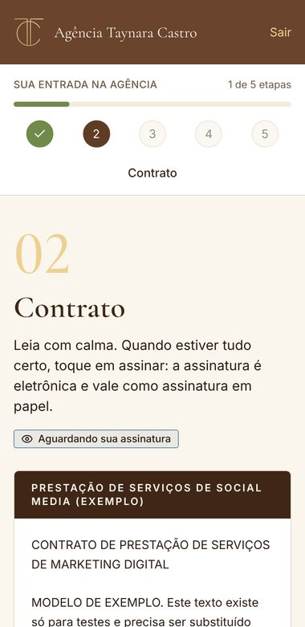
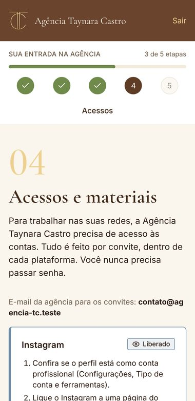
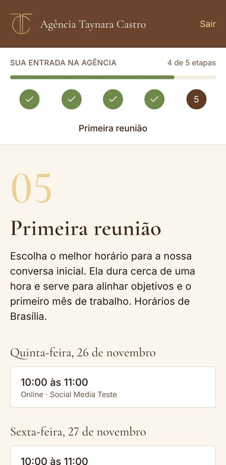
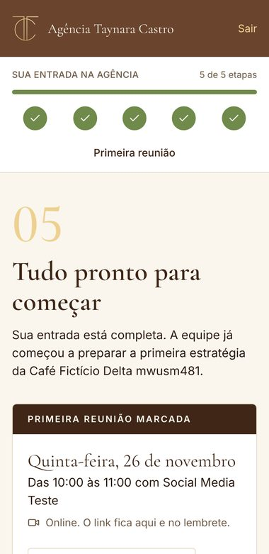
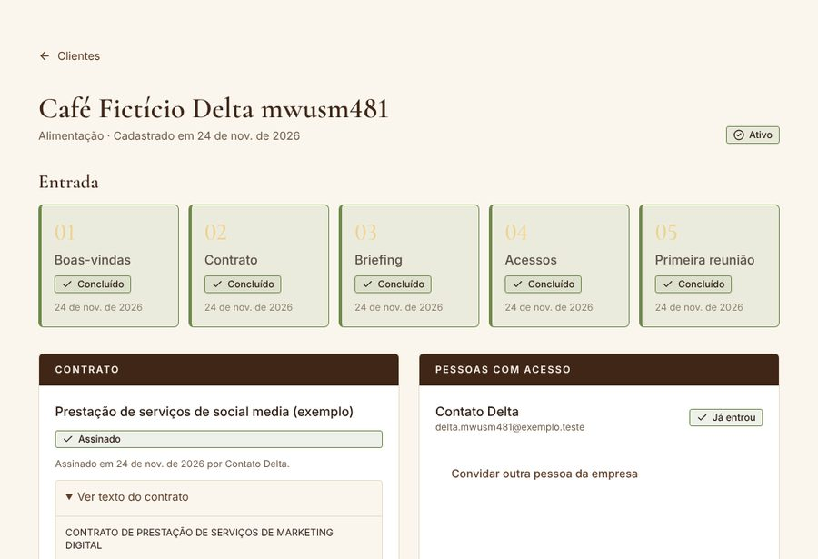

<title>Guia do Portal do Cliente</title>
<meta name="claude:viewport-fit-sides" content="cover">
<link rel="preconnect" href="https://fonts.googleapis.com">
<link rel="preconnect" href="https://fonts.gstatic.com" crossorigin>
<link rel="stylesheet" href="https://fonts.googleapis.com/css2?family=Cormorant+Garamond:wght@500;600;700&family=Inter:wght@400;500;600&display=swap">
<style>
  /* Documento em folhas A4 sobre fundo creme. Cada .pagina vira uma página do PDF. */
  :root {
    --creme: #f7f3ea;
    --folha: #fffdf8;
    --tinta: #1c1a17;
    --preto: #141311;
    --suave: #5e574c;
    --linha: #e4dccd;
    --numero: #e6ddcb;
    --oliva: #5f7a3c;
    --ouro: #c9a45f;
    --titulo: "Cormorant Garamond", Georgia, "Times New Roman", serif;
    --texto: "Inter", system-ui, -apple-system, "Segoe UI", sans-serif;
    color-scheme: light;
  }
  * { box-sizing: border-box; }
  body {
    background: var(--creme);
    color: var(--tinta);
    font-family: var(--texto);
    font-size: 15px;
    line-height: 1.55;
    padding-block: 32px 64px;
    padding-left: max(16px, env(safe-area-inset-left, 0px));
    padding-right: max(16px, env(safe-area-inset-right, 0px));
  }
  .documento { display: flex; flex-direction: column; align-items: center; gap: 28px; }
  .pagina {
    width: 100%;
    max-width: 794px;
    background: var(--folha);
    border: 1px solid var(--linha);
    padding: 56px 56px 48px;
    display: flex;
    flex-direction: column;
    gap: 20px;
    position: relative;
  }
  .rodape {
    margin-top: auto;
    padding-top: 16px;
    border-top: 1px solid var(--linha);
    display: flex;
    justify-content: space-between;
    gap: 12px;
    font-size: 11px;
    color: var(--suave);
    letter-spacing: 0.04em;
  }

  h1, h2, h3 { font-family: var(--titulo); color: var(--preto); font-weight: 600; margin: 0; text-wrap: balance; font-variant-numeric: lining-nums; }
  h2 { font-size: 34px; line-height: 1.1; }
  h3 { font-size: 22px; line-height: 1.2; }
  p { margin: 0; max-width: 64ch; }
  ul, ol { margin: 0; padding-left: 20px; display: flex; flex-direction: column; gap: 6px; }
  strong { font-weight: 600; color: var(--preto); }
  .mudo { color: var(--suave); }
  .pequeno { font-size: 13px; }

  .cabeca { display: flex; align-items: flex-end; gap: 18px; }
  .num {
    font-family: var(--titulo);
    font-weight: 500;
    font-size: 96px;
    line-height: 0.78;
    color: var(--numero);
    font-variant-numeric: lining-nums;
    flex-shrink: 0;
  }
  .rotulo { font-size: 11px; font-weight: 600; letter-spacing: 0.14em; text-transform: uppercase; color: var(--suave); }

  /* Cartões com cabeçalho preto */
  .cartao { border: 1px solid var(--linha); background: #fff; min-width: 0; display: flex; flex-direction: column; }
  .cartao > header {
    background: var(--preto);
    color: var(--creme);
    padding: 10px 16px;
    font-size: 11px;
    font-weight: 600;
    letter-spacing: 0.14em;
    text-transform: uppercase;
  }
  .cartao > div { padding: 14px 16px; display: flex; flex-direction: column; gap: 8px; font-size: 13.5px; }
  .grade-3 { display: grid; grid-template-columns: repeat(3, minmax(0, 1fr)); gap: 14px; }
  .grade-2 { display: grid; grid-template-columns: repeat(2, minmax(0, 1fr)); gap: 14px; }

  /* Capa */
  .capa { padding: 0; overflow: hidden; }
  .capa .faixa { background: var(--preto); display: flex; justify-content: center; padding: 72px 24px 64px; }
  .capa .faixa img { width: 260px; height: auto; }
  .capa .corpo { padding: 48px 56px 0; display: flex; flex-direction: column; gap: 18px; }
  .capa h1 { font-size: 58px; line-height: 1; }
  .capa .sub { font-size: 19px; color: var(--suave); max-width: 40ch; }
  .capa .rodape { margin: auto 56px 48px; }
  .ficha-capa { display: grid; grid-template-columns: repeat(3, minmax(0, 1fr)); gap: 0; border: 1px solid var(--linha); margin-top: 10px; }
  .ficha-capa > div { padding: 14px 16px; border-right: 1px solid var(--linha); display: flex; flex-direction: column; gap: 4px; }
  .ficha-capa > div:last-child { border-right: 0; }
  .ficha-capa b { font-family: var(--titulo); font-size: 24px; font-weight: 600; color: var(--preto); font-variant-numeric: lining-nums; }

  /* Passo a passo */
  .passos { list-style: none; padding: 0; gap: 0; counter-reset: passo; }
  .passos li { display: grid; grid-template-columns: 52px minmax(0, 1fr); gap: 14px; padding: 11px 0; border-bottom: 1px solid var(--linha); }
  .passos li:last-child { border-bottom: 0; }
  .passos li::before {
    counter-increment: passo;
    content: counter(passo, decimal-leading-zero);
    font-family: var(--titulo);
    font-size: 30px;
    line-height: 1;
    color: var(--numero);
    font-weight: 600;
    font-variant-numeric: lining-nums;
  }
  .passos b { display: block; font-weight: 600; color: var(--preto); }
  .passos span { font-size: 13.5px; color: var(--suave); }

  /* Telas */
  .telas { display: grid; grid-template-columns: repeat(4, minmax(0, 1fr)); gap: 12px; }
  .tela { margin: 0; display: flex; flex-direction: column; gap: 6px; min-width: 0; }
  .tela img { width: 100%; height: auto; border: 1px solid var(--linha); display: block; }
  .tela figcaption { font-size: 11.5px; color: var(--suave); line-height: 1.35; }
  .tela-larga img { width: 100%; height: auto; border: 1px solid var(--linha); display: block; }

  /* Tabelas */
  .tabela { overflow-x: auto; }
  table { width: 100%; border-collapse: collapse; font-size: 13px; }
  th { text-align: left; font-size: 10.5px; letter-spacing: 0.12em; text-transform: uppercase; color: var(--creme); background: var(--preto); padding: 8px 10px; font-weight: 600; }
  td { padding: 8px 10px; border-bottom: 1px solid var(--linha); vertical-align: top; }
  .ponto { display: inline-block; width: 12px; height: 12px; border-radius: 2px; vertical-align: -1px; margin-right: 8px; border: 1px solid rgba(0,0,0,.15); }
  .selo { display: inline-block; font-size: 11px; font-weight: 600; padding: 2px 8px; border: 1px solid var(--linha); white-space: nowrap; }
  .selo.pronto { background: #eef2e6; border-color: #b9c79f; color: #3d5222; }
  .selo.proxima { background: #f6efe0; border-color: #e0cfa8; color: #6a5420; }
  .selo.depois { background: #f3f1ec; color: var(--suave); }

  .aviso { border-left: 3px solid var(--preto); background: #f4efe4; padding: 12px 16px; font-size: 13.5px; }
  .check { list-style: none; padding: 0; gap: 8px; }
  .check li { display: grid; grid-template-columns: 18px minmax(0, 1fr); gap: 10px; font-size: 13.5px; }
  .check li::before { content: ""; width: 14px; height: 14px; border: 1.5px solid var(--preto); margin-top: 3px; }

  dl { margin: 0; display: grid; grid-template-columns: minmax(0, 1fr); gap: 10px; }
  dt { font-weight: 600; color: var(--preto); font-size: 13.5px; }
  dd { margin: 2px 0 0; font-size: 13.5px; color: var(--suave); }

  /* Celular */
  @media (max-width: 700px) {
    .pagina { padding: 32px 20px 28px; }
    .capa .corpo { padding: 32px 20px 0; }
    .capa .rodape { margin: auto 20px 28px; }
    .capa h1 { font-size: 42px; }
    .num { font-size: 64px; }
    h2 { font-size: 28px; }
    .grade-3, .grade-2, .ficha-capa { grid-template-columns: minmax(0, 1fr); }
    .ficha-capa > div { border-right: 0; border-bottom: 1px solid var(--linha); }
    .telas { grid-template-columns: repeat(2, minmax(0, 1fr)); }
  }

  /* Modo PDF: folhas A4 exatas (794 x 1123 px a 96 dpi) */
  html.pdf body { padding: 0; background: var(--folha); }
  html.pdf .documento { gap: 0; }
  html.pdf .pagina { width: 794px; max-width: none; height: 1123px; border: 0; overflow: hidden; }
</style>

<main class="documento">

  <!-- CAPA -->
  <section class="pagina capa" aria-label="Capa">
    <div class="faixa"></div>
    <div class="corpo">
      <p class="rotulo">Apresentação do protótipo</p>
      <h1>Portal do Cliente</h1>
      <p class="sub">Como funciona, o que já está pronto e o que falta para colocar no ar.</p>
      <div class="ficha-capa">
        <div><span class="rotulo">Para</span><b>Agência Taynara Castro</b></div>
        <div><span class="rotulo">Situação</span><b>Fases 1 e 2 de 6</b></div>
        <div><span class="rotulo">Data</span><b>Novembro de 2026</b></div>
      </div>
    </div>
    <div class="rodape"><span>Portal do Cliente</span><span>Documento para leitura, sem termos técnicos</span></div>
  </section>

  <!-- 01 O QUE É -->
  <section class="pagina" aria-labelledby="t1">
    <div class="cabeca"><span class="num" aria-hidden="true">01</span><h2 id="t1">O que é o portal</h2></div>
    <p>É um site próprio da agência onde cada cliente acompanha, em tempo real, tudo o que está sendo feito pela marca dele. Ele entra pelo celular ou pelo computador, sem instalar nada e sem senha.</p>
    <p>Hoje esse acompanhamento fica espalhado entre WhatsApp, e-mail, planilhas e documentos. No portal, cada coisa tem o seu lugar: contrato, briefing, conteúdos do mês, roteiros, agenda, financeiro e pedidos extras.</p>

    <div class="grade-2">
      <div class="cartao"><header>Para o cliente</header><div>
        <ul>
          <li>Sabe sempre em que pé está o trabalho, sem precisar perguntar.</li>
          <li>Aprova ou pede ajuste em cada post com um toque.</li>
          <li>Encontra contrato, boletos e arquivos num lugar só.</li>
          <li>Recebe lembrete de reunião, captação e vencimento.</li>
        </ul>
      </div></div>
      <div class="cartao"><header>Para a agência</header><div>
        <ul>
          <li>Fica sabendo na hora quando o cliente aprova, pede ajuste ou faz um pedido.</li>
          <li>Para de procurar pedidos perdidos em conversas.</li>
          <li>Vê de longe o que está atrasado e o que já foi resolvido.</li>
          <li>Passa uma imagem mais organizada e profissional.</li>
        </ul>
      </div></div>
    </div>

    <h3>Pensado para ser vendido</h3>
    <p>O portal nasce como ferramenta da Agência Taynara Castro, mas foi construído para receber outras agências e social medias. Cada agência fica separada das outras, com a própria logo, as próprias cores e os próprios clientes. Uma agência nunca enxerga os dados de outra.</p>

    <div class="aviso"><strong>Sobre este protótipo.</strong> O que você vê nas imagens deste documento é o sistema funcionando de verdade, com dados de teste inventados. Ele ainda roda num ambiente de desenvolvimento. Para ficar disponível na internet, faltam as contas e decisões da seção 08.</div>

    <div class="rodape"><span>Portal do Cliente</span><span>01 · O que é</span></div>
  </section>

  <!-- 02 QUEM USA -->
  <section class="pagina" aria-labelledby="t2">
    <div class="cabeca"><span class="num" aria-hidden="true">02</span><h2 id="t2">Quem usa e o que cada um vê</h2></div>
    <p>Existem três tipos de acesso. A regra de quem vê o quê fica guardada no próprio banco de dados, e não só na tela. Mesmo alguém que tente burlar o site não consegue ver o que não é seu.</p>

    <div class="grade-3">
      <div class="cartao"><header>Dona da agência</header><div>
        <p><strong>Vê tudo.</strong></p>
        <ul>
          <li>Todos os clientes</li>
          <li>Financeiro completo</li>
          <li>Contratos e modelos</li>
          <li>Equipe e permissões</li>
        </ul>
        <p class="mudo pequeno">Entra com e-mail e senha, e pode ligar um código extra no celular.</p>
      </div></div>
      <div class="cartao"><header>Equipe</header><div>
        <p><strong>Vê só os clientes que atende.</strong></p>
        <ul>
          <li>Briefing, conteúdos, roteiros e agenda desses clientes</li>
          <li>Nunca vê valores nem contratos</li>
        </ul>
        <p class="mudo pequeno">Social media, designer, captação. Entra com e-mail e senha.</p>
      </div></div>
      <div class="cartao"><header>Cliente</header><div>
        <p><strong>Vê só a própria conta.</strong></p>
        <ul>
          <li>Contrato, briefing, conteúdos, agenda e boletos</li>
          <li>Aprova, pede ajuste e faz pedidos</li>
        </ul>
        <p class="mudo pequeno">Entra sem senha: pede um link e recebe no e-mail. Mais de uma pessoa da empresa pode ter acesso.</p>
      </div></div>
    </div>

    <h3>Como cada pessoa entra</h3>
    <dl>
      <div><dt>Cliente: link no e-mail, sem senha</dt><dd>Na tela de entrada, o cliente digita o e-mail e recebe um link que vale por 1 hora. Funciona mesmo se ele pedir no computador e abrir no celular. Não existe senha para esquecer.</dd></div>
      <div><dt>Agência e equipe: e-mail e senha</dt><dd>Senha com pelo menos 10 caracteres, letras e números. Esqueceu, recebe um link para criar outra.</dd></div>
      <div><dt>Código extra no celular (opcional)</dt><dd>Quem é admin pode ligar a verificação em duas etapas. Além da senha, o portal pede um código de 6 números que aparece num aplicativo do celular. Recomendado para a dona da agência, que vê o financeiro.</dd></div>
    </dl>

    <div class="rodape"><span>Portal do Cliente</span><span>02 · Quem usa</span></div>
  </section>

  <!-- 03 COMO FUNCIONA -->
  <section class="pagina" aria-labelledby="t3">
    <div class="cabeca"><span class="num" aria-hidden="true">03</span><h2 id="t3">Como funciona a entrada de um cliente novo</h2></div>
    <p>Do cadastro à primeira reunião, tudo acontece dentro do portal. O cliente faz cada etapa pelo celular, pode parar no meio e voltar depois sem perder nada.</p>

    <ol class="passos">
      <li><div><b>A agência cadastra o cliente</b><span>Nome da empresa, contato, e-mail, plano, valor, dia de vencimento, responsável e equipe. Leva cerca de 2 minutos.</span></div></li>
      <li><div><b>O cliente recebe o convite por e-mail</b><span>Com o nome da agência e um botão "Acessar o portal". O convite vale 7 dias e funciona uma vez. Se vencer, a agência reenvia com um clique.</span></div></li>
      <li><div><b>Boas-vindas</b><span>Mostra quem vai cuidar da marca e o que acontece nos próximos dias. O cliente aceita os termos de uso e a política de privacidade.</span></div></li>
      <li><div><b>Contrato</b><span>Gerado sozinho a partir do modelo da agência, já com nome, valor e vencimento. O cliente assina pelo celular, com assinatura eletrônica. O portal só avança depois da assinatura confirmada.</span></div></li>
      <li><div><b>Briefing</b><span>10 partes curtas sobre negócio, público, identidade, tom de voz, redes e objetivos. Cada resposta salva sozinha. Dá para enviar logo, manual de marca e fotos, e deixar perguntas para responder depois.</span></div></li>
      <li><div><b>Acessos</b><span>Instruções curtas para liberar Instagram, Meta Business, Google e domínio por convite dentro de cada plataforma. O cliente nunca passa senha.</span></div></li>
      <li><div><b>Primeira reunião</b><span>O cliente escolhe um dos horários livres que a agência abriu. A reunião entra na agenda dele com um toque.</span></div></li>
      <li><div><b>Painel</b><span>Entrada concluída: o cliente cai no painel, com a primeira estratégia em preparação e os próximos compromissos.</span></div></li>
    </ol>

    <div class="rodape"><span>Portal do Cliente</span><span>03 · Como funciona</span></div>
  </section>

  <!-- 04 TELAS -->
  <section class="pagina" aria-labelledby="t4">
    <div class="cabeca"><span class="num" aria-hidden="true">04</span><h2 id="t4">Como fica no celular do cliente</h2></div>
    <p>Telas reais do protótipo, numa tela de celular pequena. Os nomes e dados são de teste.</p>
    <div class="telas">
      <figure class="tela"><figcaption>Convite aberto pelo e-mail</figcaption></figure>
      <figure class="tela"><figcaption>Boas-vindas e barra de etapas</figcaption></figure>
      <figure class="tela"><figcaption>Contrato já preenchido</figcaption></figure>
      <figure class="tela"><figcaption>Briefing que salva sozinho</figcaption></figure>
      <figure class="tela"><figcaption>Checklist de acessos</figcaption></figure>
      <figure class="tela"><figcaption>Escolha do horário</figcaption></figure>
      <figure class="tela"><figcaption>Tudo pronto para começar</figcaption></figure>
      <figure class="tela"><figcaption>Entrada do portal, sem senha</figcaption></figure>
    </div>
    <div class="rodape"><span>Portal do Cliente</span><span>04 · Telas do cliente</span></div>
  </section>

  <!-- 05 AGÊNCIA -->
  <section class="pagina" aria-labelledby="t5">
    <div class="cabeca"><span class="num" aria-hidden="true">05</span><h2 id="t5">O que a agência faz no painel</h2></div>
    <figure class="tela-larga" style="margin:0"></figure>
    <p class="mudo pequeno">Ficha de um cliente vista pela agência: as cinco etapas, o contrato assinado, as pessoas com acesso, os acessos liberados e a reunião marcada. Abaixo vem o briefing completo.</p>
    <div class="grade-2">
      <div class="cartao"><header>No dia a dia</header><div>
        <ul>
          <li><strong>Clientes:</strong> cadastrar e convidar, abrir a ficha de cada um.</li>
          <li><strong>Ficha:</strong> acompanhar as etapas, ler o briefing, abrir os arquivos, confirmar os acessos, reenviar convite.</li>
          <li><strong>Horários livres:</strong> abrir horários para os clientes novos marcarem a primeira reunião.</li>
        </ul>
      </div></div>
      <div class="cartao"><header>Configurações</header><div>
        <ul>
          <li><strong>Modelos de contrato:</strong> o texto-base, com campos que se preenchem sozinhos.</li>
          <li><strong>Equipe:</strong> convidar pessoas, escolher a função e quais clientes cada uma atende.</li>
          <li><strong>Segurança:</strong> trocar senha e ligar o código extra.</li>
        </ul>
      </div></div>
    </div>
    <div class="rodape"><span>Portal do Cliente</span><span>05 · Painel da agência</span></div>
  </section>

  <!-- 06 CORES E SEGURANÇA -->
  <section class="pagina" aria-labelledby="t6">
    <div class="cabeca"><span class="num" aria-hidden="true">06</span><h2 id="t6">Cores, segurança e privacidade</h2></div>
    <h3>Cada cor quer dizer uma coisa</h3>
    <p>Tudo no portal tem uma situação, e a cor do cartão muda junto. Quando algo é concluído, o cartão fica verde-oliva com um sinal de check. A cor sempre vem acompanhada do nome e de um ícone, para quem não distingue cores.</p>
    <div class="tabela"><table>
      <thead><tr><th scope="col">Situação</th><th scope="col">Quando aparece</th></tr></thead>
      <tbody>
        <tr><td><span class="ponto" style="background:#E9DFC9"></span>A fazer</td><td>Ainda não começou</td></tr>
        <tr><td><span class="ponto" style="background:#C9A45F"></span>Em andamento</td><td>A agência está produzindo</td></tr>
        <tr><td><span class="ponto" style="background:#6F8CA8"></span>Aguardando aprovação</td><td>Está com o cliente para aprovar ou assinar</td></tr>
        <tr><td><span class="ponto" style="background:#B5593C"></span>Ajuste solicitado</td><td>O cliente pediu mudança</td></tr>
        <tr><td><span class="ponto" style="background:#9DB27A"></span>Aprovado</td><td>Aprovado, ainda não publicado</td></tr>
        <tr><td><span class="ponto" style="background:#8A6A4F"></span>Programado</td><td>Agendado para publicar</td></tr>
        <tr><td><span class="ponto" style="background:#6F8A4B"></span>Concluído</td><td>Entregue, publicado, pago ou resolvido</td></tr>
        <tr><td><span class="ponto" style="background:#A63A3A"></span>Atrasado</td><td>Passou do prazo</td></tr>
      </tbody>
    </table></div>

    <h3>Como os dados ficam protegidos</h3>
    <ul>
      <li>Cada pessoa só vê o que é dela. Isso foi testado: um cliente nunca enxerga outro, e uma agência nunca enxerga outra.</li>
      <li>O portal não guarda senha de Instagram nem número de cartão. Os acessos são por convite e o pagamento fica com a empresa de cobrança.</li>
      <li>Arquivos abrem por links que vencem em poucos minutos.</li>
      <li>Fica registrado quem aceitou os termos, quem assinou, quem aprovou e quem abriu o financeiro, com data e hora.</li>
      <li>O cliente aceita os termos de uso e a política de privacidade na entrada, como pede a LGPD.</li>
    </ul>
    <div class="rodape"><span>Portal do Cliente</span><span>06 · Cores e segurança</span></div>
  </section>

  <!-- 07 FASES -->
  <section class="pagina" aria-labelledby="t7">
    <div class="cabeca"><span class="num" aria-hidden="true">07</span><h2 id="t7">O que está pronto e o que vem</h2></div>
    <p>O portal está sendo construído em seis fases. Cada fase só começa depois que a anterior é testada e aprovada.</p>
    <div class="tabela"><table>
      <thead><tr><th scope="col">Fase</th><th scope="col">O que entrega</th><th scope="col">Situação</th></tr></thead>
      <tbody>
        <tr><td><strong>1. Base</strong></td><td>Login sem senha para o cliente, os três tipos de acesso, identidade visual da agência, segurança</td><td><span class="selo pronto">Pronta</span></td></tr>
        <tr><td><strong>2. Entrada do cliente</strong></td><td>Cadastro e convite, contrato, briefing, acessos, primeira reunião, ficha do cliente</td><td><span class="selo pronto">Pronta</span></td></tr>
        <tr><td><strong>3. Operação do mês</strong></td><td>Estratégia, conteúdos com aprovação e ajuste, prévia do feed, roteiros de reels e stories, agenda, tarefas, arquivos e mensagens</td><td><span class="selo proxima">Próxima</span></td></tr>
        <tr><td><strong>4. Avisos e lembretes</strong></td><td>Sino de notificações, e-mails às 9h, lembrete 48h antes de reunião e captação, aviso de cliente parado na entrada</td><td><span class="selo depois">Depois</span></td></tr>
        <tr><td><strong>5. Financeiro e pedidos</strong></td><td>Boleto e Pix automáticos, lembrete de vencimento, baixa do pagamento, pedidos extras com orçamento e prazo</td><td><span class="selo depois">Depois</span></td></tr>
        <tr><td><strong>6. Extras</strong></td><td>Relatório mensal, aprovação direto pelo e-mail, pesquisa de satisfação, busca, ícone no celular, painel com todos os clientes</td><td><span class="selo depois">Depois</span></td></tr>
      </tbody>
    </table></div>
    <h3>Nesta versão ainda não tem</h3>
    <ul>
      <li>Aviso no sino quando o cliente conclui uma etapa. As datas já ficam gravadas e o aviso entra na fase 4.</li>
      <li>Assinatura eletrônica real. Hoje uma tela de teste faz o papel da ferramenta, até a escolha entre Autentique e ZapSign.</li>
      <li>Envio de vídeos acima de 50 MB, que entra na área de arquivos da fase 3.</li>
      <li>Avisos por WhatsApp. O sistema já foi preparado para isso, mas nesta versão os avisos são por e-mail e dentro do portal.</li>
    </ul>
    <div class="rodape"><span>Portal do Cliente</span><span>07 · Fases</span></div>
  </section>

  <!-- 08 PARA COLOCAR NO AR -->
  <section class="pagina" aria-labelledby="t8">
    <div class="cabeca"><span class="num" aria-hidden="true">08</span><h2 id="t8">O que é preciso para colocar no ar</h2></div>
    <p>O portal usa serviços conhecidos, cada um com uma função. Todos são contratados no nome da agência, para que ela seja dona dos dados e das contas. Todos têm plano gratuito para começar; os preços dos planos pagos mudam com frequência, então confira no site de cada um antes de contratar.</p>
    <div class="tabela"><table>
      <thead><tr><th scope="col">O quê</th><th scope="col">Para que serve</th><th scope="col">Quando</th></tr></thead>
      <tbody>
        <tr><td><strong>Domínio</strong><br><span class="mudo pequeno">Registro.br</span></td><td>O endereço do portal, por exemplo portal.suaagencia.com.br, e o remetente dos e-mails</td><td>Agora</td></tr>
        <tr><td><strong>Supabase</strong></td><td>Guarda os dados, os arquivos e os acessos. Escolher a região São Paulo. Para uso real, o plano pago, porque o gratuito pausa quando fica parado</td><td>Agora</td></tr>
        <tr><td><strong>Vercel</strong></td><td>Coloca o site no ar. Para uso comercial, o plano pago</td><td>Agora</td></tr>
        <tr><td><strong>Resend</strong></td><td>Envia os e-mails: convite, link de acesso e lembretes</td><td>Agora</td></tr>
        <tr><td><strong>Autentique ou ZapSign</strong></td><td>Assinatura eletrônica do contrato. Escolher uma das duas</td><td>Agora</td></tr>
        <tr><td><strong>Asaas</strong></td><td>Gera boleto e Pix e avisa quando o cliente paga. Cobra uma taxa por cobrança paga</td><td>Fase 5</td></tr>
        <tr><td><strong>Metricool</strong></td><td>Números do relatório mensal, se a agência já usa</td><td>Fase 6</td></tr>
      </tbody>
    </table></div>
    <h3>Textos que só a agência pode dar</h3>
    <ul class="check">
      <li><span><strong>Contrato real da agência</strong>, que vira o modelo do portal. O atual é um exemplo.</span></li>
      <li><span><strong>Revisão jurídica</strong> dos termos de uso e da política de privacidade. Os textos atuais são um ponto de partida.</span></li>
      <li><span><strong>Logo em arquivo original</strong> (SVG ou PNG com fundo transparente). Hoje é usada a foto da placa.</span></li>
      <li><span><strong>E-mail de contato da agência</strong> que aparece para os clientes, e o número do portfólio do Meta Business para os convites de acesso.</span></li>
    </ul>
    <div class="rodape"><span>Portal do Cliente</span><span>08 · Para colocar no ar</span></div>
  </section>

  <!-- 09 PASSO A PASSO -->
  <section class="pagina" aria-labelledby="t9">
    <div class="cabeca"><span class="num" aria-hidden="true">09</span><h2 id="t9">Passo a passo até o primeiro cliente</h2></div>
    <ol class="passos">
      <li><div><b>Registrar o domínio</b><span>Se a agência já tem um site, basta criar um endereço dentro dele, como portal.suaagencia.com.br.</span></div></li>
      <li><div><b>Criar as contas no nome da agência</b><span>Supabase, Vercel, Resend e a ferramenta de assinatura. Use um e-mail da agência, não um pessoal.</span></div></li>
      <li><div><b>Dar acesso para quem vai configurar</b><span>Cada serviço permite convidar outra pessoa como membro da conta. Assim ninguém precisa passar senha. Chaves e senhas nunca devem ir por WhatsApp ou e-mail.</span></div></li>
      <li><div><b>Configurar e publicar</b><span>Ligar o portal às contas, apontar o domínio, verificar o remetente de e-mail e cadastrar a dona da agência como admin. As instruções técnicas estão no arquivo README do projeto.</span></div></li>
      <li><div><b>Montar a casa</b><span>Subir o contrato real, convidar a equipe, abrir horários para primeira reunião e ligar o código extra no celular da dona.</span></div></li>
      <li><div><b>Testar com um cliente piloto</b><span>Escolher um cliente de confiança para fazer a entrada completa e contar o que achou. Ajustar o que for preciso.</span></div></li>
      <li><div><b>Abrir para os demais clientes</b><span>Convidar os clientes atuais aos poucos. Para quem já tem contrato assinado, a agência marca o contrato como "assinado fora do sistema".</span></div></li>
    </ol>
    <div class="aviso"><strong>Para mostrar o portal funcionando antes de tudo isso,</strong> dá para publicar uma versão de demonstração com dados de teste assim que existirem as contas do Supabase e da Vercel.</div>
    <div class="rodape"><span>Portal do Cliente</span><span>09 · Passo a passo</span></div>
  </section>

  <!-- 10 PERGUNTAS -->
  <section class="pagina" aria-labelledby="t10">
    <div class="cabeca"><span class="num" aria-hidden="true">10</span><h2 id="t10">Perguntas que costumam aparecer</h2></div>
    <dl>
      <div><dt>O cliente precisa baixar um aplicativo?</dt><dd>Não. O portal abre no navegador do celular ou do computador. Na fase 6, ele poderá colocar um ícone do portal na tela inicial do celular.</dd></div>
      <div><dt>E se o cliente esquecer a senha?</dt><dd>O cliente não tem senha. Ele digita o e-mail e recebe um link novo sempre que quiser entrar.</dd></div>
      <div><dt>O cliente pode parar o briefing no meio?</dt><dd>Pode. Cada resposta é salva na hora. Quando ele volta, o portal abre exatamente onde parou, mesmo em outro aparelho.</dd></div>
      <div><dt>Mais de uma pessoa da empresa do cliente pode entrar?</dt><dd>Sim. A agência convida o sócio ou o gerente de marketing pela ficha do cliente, e todos veem a mesma conta.</dd></div>
      <div><dt>Dá para mudar o contrato depois?</dt><dd>Sim. A agência edita o modelo quando quiser. Os campos como nome do cliente, valor e vencimento se preenchem sozinhos.</dd></div>
      <div><dt>A equipe vê quanto o cliente paga?</dt><dd>Não. Valores, contratos e boletos só aparecem para a dona da agência e para o próprio cliente.</dd></div>
      <div><dt>Onde ficam os dados?</dt><dd>Em servidores do Supabase, na região de São Paulo, nas contas da própria agência.</dd></div>
      <div><dt>Como outra agência passaria a usar?</dt><dd>Ela ganha uma conta própria no mesmo portal, com a própria logo e cores. Os dados ficam completamente separados. A cobrança dessas agências pelo uso do portal será definida depois da fase 5.</dd></div>
      <div><dt>E o WhatsApp?</dt><dd>Nesta versão os avisos vão por e-mail e pelo sino do portal. O WhatsApp pode entrar depois sem mudar as regras dos avisos.</dd></div>
    </dl>
    <div class="rodape"><span>Portal do Cliente</span><span>10 · Perguntas</span></div>
  </section>

</main>
